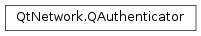

QAuthenticator¶
Synopsis¶
Detailed Description¶
The
PySide2.QtNetwork.QAuthenticatorclass provides an authentication object.The
PySide2.QtNetwork.QAuthenticatorclass is usually used in thePySide2.QtNetwork.QNetworkAccessManager.authenticationRequired()andPySide2.QtNetwork.QNetworkAccessManager.proxyAuthenticationRequired()signals ofPySide2.QtNetwork.QNetworkAccessManagerandPySide2.QtNetwork.QAbstractSocket. The class provides a way to pass back the required authentication information to the socket when accessing services that require authentication.
PySide2.QtNetwork.QAuthenticatorsupports the following authentication methods:
- Basic
- NTLM version 2
- Digest-MD5
Options¶
In addition to the username and password required for authentication, a
PySide2.QtNetwork.QAuthenticatorobject can also contain additional options. ThePySide2.QtNetwork.QAuthenticator.options()function can be used to query incoming options sent by the server; thePySide2.QtNetwork.QAuthenticator.setOption()function can be used to set outgoing options, to be processed by the authenticator calculation. The options accepted and provided depend on the authentication type (see method()).The following tables list known incoming options as well as accepted outgoing options. The list of incoming options is not exhaustive, since servers may include additional information at any time. The list of outgoing options is exhaustive, however, and no unknown options will be treated or sent back to the server.
Basic¶
Option Direction Type Description realmIncoming PySide2.QtCore.QStringContains the realm of the authentication, the same as PySide2.QtNetwork.QAuthenticator.realm()The Basic authentication mechanism supports no outgoing options.
NTLM version 2¶
The NTLM authentication mechanism currently supports no incoming or outgoing options. On Windows, if nouserhas been set, domain\user credentials will be searched for on the local system to enable Single-Sign-On functionality.
Digest-MD5¶
Option Direction Type Description realmIncoming PySide2.QtCore.QStringContains the realm of the authentication, the same as PySide2.QtNetwork.QAuthenticator.realm()The Digest-MD5 authentication mechanism supports no outgoing options.
See also
-
class
PySide2.QtNetwork.QAuthenticator¶ -
class
PySide2.QtNetwork.QAuthenticator(other) Parameters: other – PySide2.QtNetwork.QAuthenticatorConstructs an empty authentication object.
Constructs a copy of
other.
-
PySide2.QtNetwork.QAuthenticator.isNull()¶ Return type: PySide2.QtCore.boolReturns
trueif the object has not been initialized. Returnsfalseif non-const member functions have been called, or the content was constructed or copied from another initializedPySide2.QtNetwork.QAuthenticatorobject.
-
PySide2.QtNetwork.QAuthenticator.__ne__(other)¶ Parameters: other – PySide2.QtNetwork.QAuthenticatorReturn type: PySide2.QtCore.boolReturns
trueif this authenticator is different fromother; otherwise returnsfalse.
-
PySide2.QtNetwork.QAuthenticator.__eq__(other)¶ Parameters: other – PySide2.QtNetwork.QAuthenticatorReturn type: PySide2.QtCore.boolReturns
trueif this authenticator is identical toother; otherwise returnsfalse.
-
PySide2.QtNetwork.QAuthenticator.option(opt)¶ Parameters: opt – unicode Return type: object Returns the value related to option
optif it was set by the server. See theOptions sectionfor more information on incoming options. If optionoptisn’t found, an invalidPySide2.QtCore.QVariantwill be returned.See also
PySide2.QtNetwork.QAuthenticator.setOption()PySide2.QtNetwork.QAuthenticator.options()QAuthenticator options
-
PySide2.QtNetwork.QAuthenticator.options()¶ Return type: Returns all incoming options set in this
PySide2.QtNetwork.QAuthenticatorobject by parsing the server reply. See theOptions sectionfor more information on incoming options.See also
PySide2.QtNetwork.QAuthenticator.option()QAuthenticator options
-
PySide2.QtNetwork.QAuthenticator.password()¶ Return type: unicode Returns the password used for authentication.
-
PySide2.QtNetwork.QAuthenticator.realm()¶ Return type: unicode Returns the realm requiring authentication.
-
PySide2.QtNetwork.QAuthenticator.setOption(opt, value)¶ Parameters: - opt – unicode
- value – object
Sets the outgoing option
optto valuevalue. See theOptions sectionfor more information on outgoing options.See also
PySide2.QtNetwork.QAuthenticator.options()PySide2.QtNetwork.QAuthenticator.option()QAuthenticator options
-
PySide2.QtNetwork.QAuthenticator.setPassword(password)¶ Parameters: password – unicode Sets the
passwordused for authentication.
-
PySide2.QtNetwork.QAuthenticator.setRealm(realm)¶ Parameters: realm – unicode
-
PySide2.QtNetwork.QAuthenticator.setUser(user)¶ Parameters: user – unicode Sets the
userused for authentication.
-
PySide2.QtNetwork.QAuthenticator.user()¶ Return type: unicode Returns the user used for authentication.
© 2018 The Qt Company Ltd. Documentation contributions included herein are the copyrights of their respective owners. The documentation provided herein is licensed under the terms of the GNU Free Documentation License version 1.3 as published by the Free Software Foundation. Qt and respective logos are trademarks of The Qt Company Ltd. in Finland and/or other countries worldwide. All other trademarks are property of their respective owners.